Sistemul de gestiune a cabinetului cu inteligență de dosar încorporată — pentru avocații care își vor serile înapoi.
IRONSTICK este un sistem complet de gestiune a activității pentru cabinetele de avocatură, pentru Windows și tablete Android: clienți, dosare, probe, termene, e-mail și producere de documente, cu un strat de IA care lucrează pe dosarele dumneavoastră reale. Este pan-european și construit pentru tradiția de civil law (romano-germanică), în care autoritatea este legea codificată, și este disponibil în unsprezece limbi de interfață: engleză, germană, franceză, italiană, spaniolă, română, portugheză, neerlandeză, turcă, ucraineană și rusă. IRONSTICK recunoaște jurisdicția fiecărui dosar, își construiește și își menține propria bibliotecă de legi și se adaptează felului dumneavoastră de lucru. Este offline-first, iar fiecare flux extern de date este documentat în declarația GDPR privind fluxurile de date.
| Nevoie | Ce oferă IRONSTICK | Detalii |
|---|---|---|
| Economie de timp, ore facturabile | Proiectele de cereri, rezumatele de dosar și dosarele complete se nasc din dosarul însuși — verificați, în loc să căutați. Dosarele mari, cu toate anexele, sunt ștampilate și paginate ca un singur PDF, complet automat. | Capitolul 3, 5 |
| Niciun termen ratat | Clopoțelul din bara de meniu devine portocaliu când un termen scade în zece zile și roșu când un termen este scadent astăzi sau depășit — permanent vizibil. Dosarele fără activitate de 14 zile sunt semnalate automat, ca dosarele inactive să rămână vizibile. | Capitolul 1 |
| Secret profesional și GDPR | Baza de date este stocată criptat pe propriul dumneavoastră hardware; IRONSTICK nu trimite furnizorului nicio dată de client. Funcțiile interactive de IA externă cer consimțământul dumneavoastră, apelurile prin routerul central de IA sunt pseudonimizate și consemnate, iar declarația GDPR privind fluxurile de date include o clauză model pentru nota de informare a clienților. Prin Bridge-urile IA de desktop, abonamentul de IA pe care îl dețineți deja lucrează direct pe dosarul viu. | Capitolul 9, 11 |
| Încredere în furnizor | Cabinetul nu depinde de centrul de date al unui furnizor: dosarele sunt stocate pe propriul dumneavoastră hardware, iar stațiile de lucru continuă să funcționeze dacă IRONSTICK SERVER sau conexiunea la internet cade. Licența se verifică offline, pe calculatorul dumneavoastră, iar orice dosar poate fi exportat oricând ca dosar PDF sau ca ZIP de probe EDRM. | Capitolul 8, 13 |
| Costuri previzibile | Licență modulară: cumpărați doar componentele pe care le folosiți și le completați ulterior prin cheia de licență. IA rulează pe propriile dumneavoastră conturi la furnizori (se recomandă o alimentare de cel puțin 20 de dolari/euro per furnizor) în loc de taxe lunare per utilizator de ordinul sutelor de euro. Toate prețurile pe pagina de prețuri. | Capitolul 9 |
| Integrare în fluxurile existente | Scannerul sau copiatorul salvează într-un folder, iar IRONSTICK preia de acolo. Căsuța de e-mail este preluată în fundal și repartizată pe dosare. Pe tableta Android, termenele, scadențele și ședințele de judecată sunt oglindite într-un calendar „IRONSTICK” din contul dumneavoastră Google, astfel încât apar pe orice telefon conectat la acel cont; tableta lucrează pe același dosar. | Capitolul 1, 15 |
| Efort redus de introducere | Fără migrare „big bang": dosarele noi rulează în IRONSTICK din prima zi, iar pe cele vechi le mutați doar când merită. Cu OCR-ul integrat și cu precompletarea de către IA, confirmați datele unui document în loc să le tastați. Instruire la fața locului, o zi pe modul. | — |
| Cunoașterea părților, a instanței și a contextului mai larg | OSINT la o apăsare de buton pentru orice persoană și firmă, profiluri de judecători cu evaluarea hotărârilor lor și o analiză a relațiilor peste toate dosarele — cine este legat de cine și de ce. Actele de procedură pot ține cont de practica documentată a instanței în materie de hotărâri. Fiecare hotărâre judecătorească este evaluată o singură dată după o grilă fixă, iar IA citește evaluările întregului cabinet înaintea fiecărui act adresat acelei instanțe. | Capitolul 4 |
IRONSTICK merită oriunde se adună multe documente, multe părți și termene stricte — și acolo unde datele clienților nu au voie să părăsească biroul. Câștigă cel mai mult cabinetele care astăzi pierd ore căutând, tastând și compilând.
În producție — în fiecare zi.
IRONSTICK este folosit zilnic, în mod productiv, de mai mulți avocați. A redactat deja sute de acte de procedură, organizează dosare individuale cu peste 3.000 de documente și peste 2.500 de entități și produce, unul după altul, șabloane apte de depunere ale actelor adresate instanței. Fiecare versiune trece integral, înainte de livrare, peste 1.500 de teste automate, șaptesprezece porți deterministe păzesc fiecare pas al IA, iar actualizările se instalează peste versiunea existentă, cu toate datele păstrate.
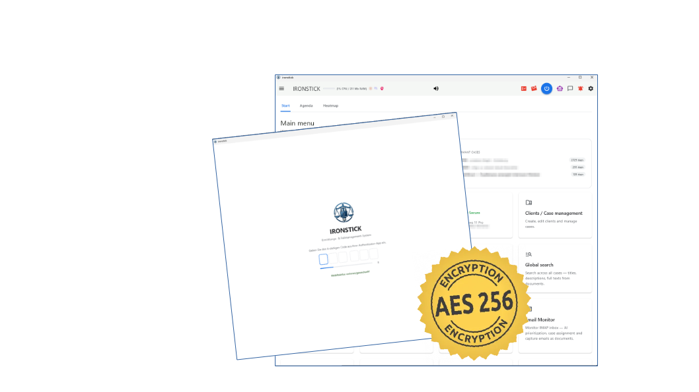
Partea I — Practica de zi cu zi
Deschideți IRONSTICK și ziua este deja ordonată. Ecranul de pornire arată ce este scadent și ce a amuțit; Agenda contopește tot ce s-a întâmplat în toate dosarele dumneavoastră — actele depuse ieri, e-mailurile de peste noapte, termenele noi de judecată, fotografiile, transcrierile — într-un singur flux cronologic. Vedeți întregul cabinet fără să deschideți un singur dosar. În plus, rezumatul zilei separat vă oferă, în limbaj vorbit, o scurtă privire de ansamblu asupra zilei, la începutul lucrului.
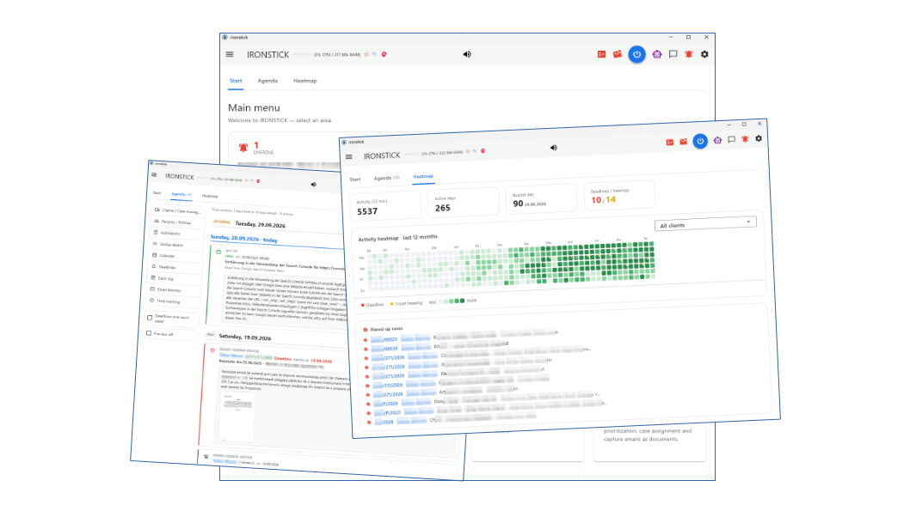
Asistentul de dosar răspunde la întrebări despre dosarele dumneavoastră cum ar face-o un colaborator bun — doar că are întregul dosar indexat și răspunde în secunde:
Fiecare document citat într-un răspuns este un link către înregistrarea din dosarul dumneavoastră — rezultate numerotate pe care le deschideți sau le puteți asculta printr-o scurtă comandă („deschide 1", „citește-mi 1"); ca surse sunt afișate numai înregistrările preluate din baza dumneavoastră de date. Întrebările de rutină primesc răspuns de la un strat local, pe propria mașină, fără ca vreo dată să părăsească dispozitivul; analizele mai grele escaladează către IA externă numai cu consimțământul dumneavoastră. Asistentul funcționează în toate cele unsprezece limbi de interfață și poate fi operat în întregime prin voce, cu mâinile libere, cu recunoaștere vocală offline și citire cu voce tare.
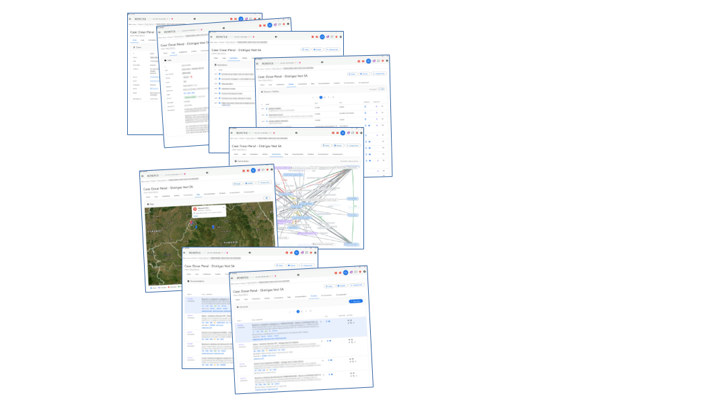
Acesta este vârful de lance. Actele de procedură și scrisorile le scrieți în dialog cu IA — în chatul propriu al IRONSTICK (pe cheia dumneavoastră API) sau prin Bridge-ul către IA de desktop (Claude, ChatGPT, Qwen sau Kimi Desktop). Redactează text › Cu ajutorul IA din dosar deschide chatul cu dosarul și documentul deja numite; de acolo IA lucrează ca un asociat pe dosarul viu: datele de bază ale clientului, cronica dosarului cu textele integrale ale documentelor, termenele, probele conexe, borderoul de anexe, instrucțiunile dumneavoastră de dosar — și chiar istoricul recent al dosarelor învecinate ale aceluiași client, pentru că răspunsul adversarului stă deseori în dosarul paralel. Dacă lipsesc informații, pune întrebări suplimentare, în loc să vă preseze dosarul în șabloane fixe.
Ore de studiu al dosarului și de redactare devin minute de verificare — citiți, rafinați, semnați.
Inima IRONSTICK este inteligența probelor. Tot ce înregistrați — PDF-uri scanate, e-mailuri cu atașamente, istorice WhatsApp, fotografii, înregistrări audio — devine text integral căutabil. OCR-ul este încorporat, fără nimic de instalat: pe Windows acoperă peste 35 de limbi europene, inclusiv toate cele unsprezece limbi de interfață. Căutarea este intenționat tolerantă: găsește rezultate chiar și când lipsesc diacriticele, în prezența erorilor tipice de scanare sau a numelor parțiale.
Înregistrările devin text — automat, pe propriul calculator. Convorbiri telefonice, înregistrări din ședințe, mesaje vocale, clipuri video: IRONSTICK acceptă orice format audio și video uzual (Windows). Decupați partea relevantă, alegeți limba, numărul de vorbitori și nivelul de calitate (rapid, mediu, ridicat) și vedeți timpul de calcul estimat înainte de a porni. Recunoașterea vocală rulează complet offline pe calculatorul dumneavoastră. Apoi IA atribuie frazele vorbitorilor — cu acordul dumneavoastră și pseudonimizat; nu are voie să schimbe niciun cuvânt, fiecare rând este verificat față de textul recunoscut. Ceea ce recunoașterea nu a înțeles cu certitudine este marcat, nu ghicit. Rezultatul se deschide în editor și, după verificarea dumneavoastră, devine o probă ce poate fi citată.
Rețeaua se construiește singură. O IA desktop conectată prin Bridge citește dosarul, cercetează părțile pe internet și depune fiecare persoană, firmă, instituție și fiecare legătură găsită ca propunere de aprobat cu un singur clic; un auto-linker de fundal leagă fiecare parte de fiecare dosar ale cărui documente o numesc; iar Universul transformă întregul fond de date într-o rețea 3D prin care puteți zbura, cu clici detectate automat — grupurile dens conectate sunt evidențiate în roșu. În câteva ore aveți o rețea consolidată de persoane și firme peste întregul fond de date, ceea ce nu ar fi fezabil manual, iar vizualizarea scoate clica direct la iveală.
Ce înseamnă asta în practică — două zile, măsurate. În două zile de lucru din septembrie 2026, o singură IA desktop conectată prin Bridge a citit dosarele unei cauze cu multe părți, a cercetat părțile pe internet și a depus ce a găsit; rolul avocatului s-a limitat la verificarea și aprobarea propunerilor. Rezultatul, numărat apoi în baza de date: 293 de persoane și firme, 11 instituții, 811 legături și 733 de asocieri parte–dosar — 2.487 de decizii de verificare în total, 97 % acceptate, 3 % respinse la poartă. Introdus manual — surse citite, fiecare persoană identificată, fiecare legătură verificată, fiecare înregistrare tastată — înseamnă circa 310 ore de lucru: opt săptămâni cu normă întreagă pentru o persoană, sau o jumătate de an pe lângă activitatea curentă pe dosare. Timpul este doar o parte a beneficiului. Nimeni nu poate ține în minte 300 de nume și 800 de legături; clicile evidențiate în vizualizarea Univers nu se văd într-un dosar pe hârtie. Cele 3 % sunt motivul pentru care există poarta de verificare: fiecare dintre ele ar fi fost o înregistrare greșită, dacă ar fi fost scrisă fără verificare.
IRONSTICK desenează și harta dosarelor unui client: dosarele ca hexagoane, grupate după propriile dumneavoastră cauze comune, legate acolo unde împart părți, se citează reciproc ca anexe sau menționează numărul de dosar al celuilalt. IA conectată citește aceeași hartă prin instrumente dedicate.

OSINT (Open Source Intelligence) — evaluarea sistematică a surselor liber accesibile — este practică standard în organele de anchetă și în cabinetele de drept comercial, dar este muncă manuală: fiecare cercetează altfel și fiecare uită altceva. IRONSTICK o transformă într-o procedură fixă. IA furnizează numele, localitatea, județul, țara și dacă subiectul este persoană fizică sau juridică; aplicația rulează apoi, de fiecare dată, aceeași procedură documentată:
Rezultatul: un profil de cercetare care urmează aceeași procedură și este la fel de complet la a trei suta persoană ca la prima. Se evaluează exclusiv surse accesibile publicului.
Nu cunoaștem niciun alt produs care să țină o bază de date a relațiilor completă între persoane, firme și instituții la nivelul persoanei individuale, să o descompună până la dosarul individual și la proba individuală, să o prezinte clar avocatului și să dea IA aceeași imagine ca text — împreună cu o analiză a persoanei cu 24 de câmpuri pentru fiecare persoană; IA poate doar propune modificări ale acesteia, iar fiecare are nevoie de aprobarea dumneavoastră.
Softul clasic de cabinet ține, de regulă, părțile ca o agendă cu rol în dosar: niciun graf între ele, nicio analiză a persoanei, nicio clică, iar asistenții lui IA citesc documente, nu rețeaua. Majoritatea asistenților juridici IA rulează în cloudul furnizorului, cu un model pe care cabinetul nu îl poate alege. Marile platforme de investigație oferă grafuri și profiluri, dar sunt concepute pentru autorități și corporații și necesită de regulă un proiect de consultanță; nu au dosar în sensul avocatului și nici o IA interschimbabilă care să le citească. Un cabinet care duce procese penale și civile cu zeci de părți și dosare împletite cade între aceste piețe. Acolo se află IRONSTICK.
Această cunoaștere nu se limitează la un singur dosar. Ea cuprinde fiecare parte, fiecare relație și fiecare rol pe care o persoană l-a avut în oricare dintre dosarele dumneavoastră, peste dosare și peste clienți — cine stă în ce consiliu, cine semnează pentru cine, cine a apărut ca martor, adversar sau funcționar în ce procedură. Crește în fiecare zi, ca produs secundar al muncii pe care avocatul și IA o desfășoară pe dosare.
În instanță, aceasta este diferența dintre a susține un dosar și a cunoaște terenul: fiecare act poate fi aliniat la rețeaua reală din jurul dosarului — cine este legat de cine și cine a apărut anterior de care parte — pentru că avocatul știe unde se află fiecare lucru. A le compila manual este impractic; în IRONSTICK se acumulează în cadrul muncii zilnice pe dosare.
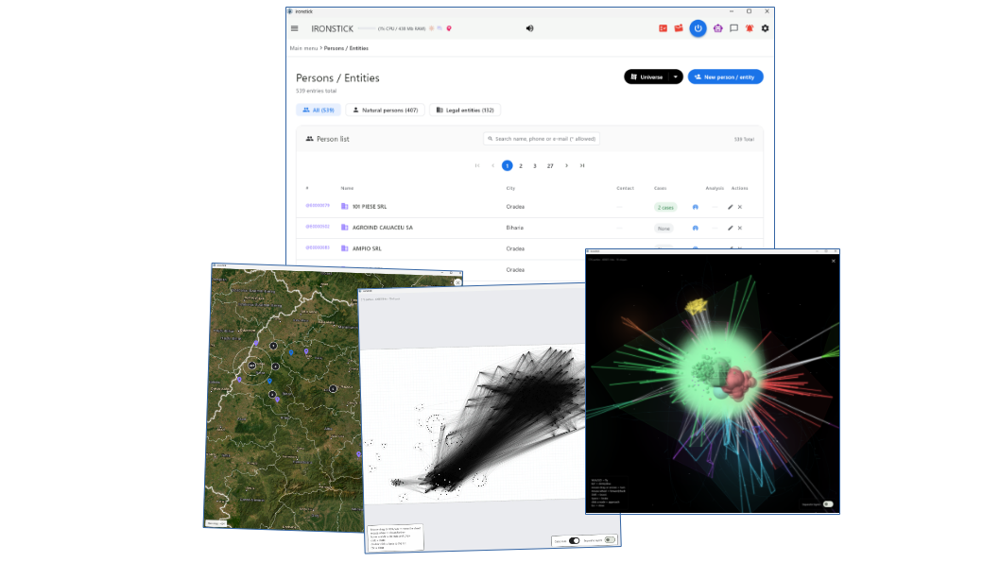
O foaie în loc de o mie de linii. Rețeaua de relații a unei persoane sau a unui caz și cronologia documentelor sale sunt gata sub formă de grafic la apăsarea unui buton: rețeaua arată cele mai urgente cincizeci de noduri, ponderate după termene, activitate recentă și conexiuni; cronologia ordonează în timp actele primite și trimise, cu anexele chiar lângă fiecare act. Fiecare număr este clicabil și duce la probă, la persoană sau la instituție. Un clic pe Înregistrează duce graficul la înregistrarea documentelor, unde îl atribuiți și primește ștampila la salvare; din rețeaua cazului puteți crea în plus un Wallpaper: o prezentare A4 în format peisaj, imprimabilă, pentru peretele biroului; se descarcă doar și nu este stocată în dosar.
Și IA de birou conectată prin Bridge desenează în același stil: procese, căi procedurale, cronologii, rețele. Discută graficul cu dumneavoastră și afișează previzualizarea în IRONSTICK; desenarea și verificarea erorilor înainte de afișare sunt deterministe, fără IA. Graficele pot fi vizualizate și pe tabletă.
IRONSTICK este și un DMS complet — unul care gândește în probe, ștampile și numere de pagină, nu în foldere:
În practica procedurii civile și a litigiilor de mare amploare, acest argument lovește exact în cele mai importante puncte dureroase ale avocaților și ale personalului cabinetului — timpul, riscul de erori și munca manuală:
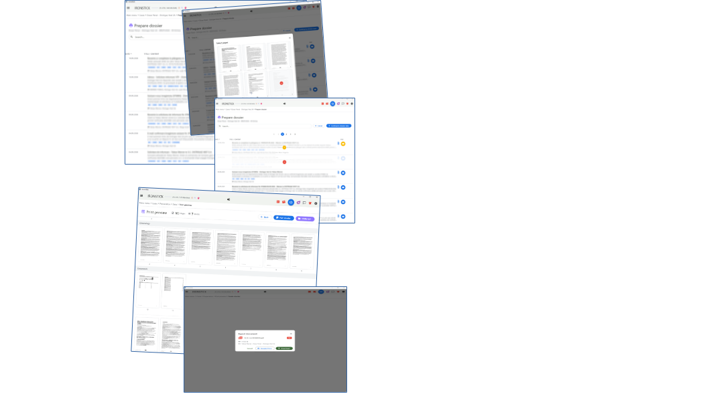
Partea a II-a — IA la adâncime maximă
Pentru munca analitică de adâncime, IRONSTICK oferă ceva ce niciun folder de export nu poate: un Bridge viu între propria IA de desktop — Claude Desktop, ChatGPT Desktop, Qwen Desktop și/sau Kimi Desktop, fiecare licențiat separat și deblocat în cheia de licență a aplicației client — și aplicația în funcțiune. IA citește starea curentă a dosarului prin peste 200 de instrumente construite special — cronici, texte integrale, e-mailuri, termene, date de bază — și lucrează la adâncime maximă:
Construit pentru dosare mari — de ce un Bridge viu bate orice export de fișiere. Modulele Bridge sunt concepute cu un singur scop: lucrul pe bazine mari de date care cer analiză la detaliu maxim. Păstrați controlul deplin prin comutatoare, porți de consimțământ și licențiere per IA, în timp ce fiecare conversație și fiecare evaluare se pot sprijini pe întregul bazin de date IRONSTICK. Acest nivel de detaliu nu poate fi atins printr-o alimentare convențională cu fișiere (exportul de fișiere Markdown într-un chat de IA): chiar și cele mai mari ferestre de context ale IA cuprind deodată doar câțiva megabytes de text —
| Model / platformă | Fereastra de context (tokeni) | ≈ capacitate de text |
|---|---|---|
| Claude (Opus / Sonnet) | 1.000.000 | ~2.500 KB (2,5 MB) |
| ChatGPT (aplicație, Plus) | 256.000 | ~1.000 KB |
| ChatGPT (aplicație, Pro) | 400.000 | ~1.600 KB |
| ChatGPT (API maxim) | 1.050.000 | ~4.000 KB (4 MB) |
— în timp ce o arhivă de dosare matură este de multe ori mai mare. Bridge-ul ocolește această limită: în loc să încarce fișiere în fereastră, IA primește peste 200 de instrumente construite special, cu instrucțiuni stricte de folosire și aduce exact pasajele, documentele, e-mailurile și termenele de care are nevoie, exact când are nevoie de ele — proaspete, din sistemul viu, peste întregul bazin. Fereastra de context poartă atunci analiza, nu volumul.
Iar când sarcina chiar este „citește tot": cu un singur apel, IA pregătește întregul dosar — complet, cu textul OCR normalizat — într-o zonă locală de lucru și îl citește apoi bucată cu bucată, fără să împingă tot dosarul prin fereastră. Un dosar cu 400 de documente devine complet lizibil, iar copia pregătită este întotdeauna completă. Aceeași zonă îi dă IA un start de sesiune dintr-un singur apel — data, limba, ecranul dumneavoastră curent, briefingul zilnic, termenele și sarcinile deschise într-un singur rezumat — iar o verificare de prospețime invalidează un extras pregătit de îndată ce dosarul de bază se schimbă, astfel încât IA lucrează pe starea curentă a dosarului.
Browserul IRONSTICK — vedeți ce citește IA (Windows). IRONSTICK deschide paginile web și documentele din dosarul dumneavoastră într-o fereastră de browser proprie, cu chenar roșu, astfel încât să o puteți deosebi oricând de browserul dumneavoastră personal. La instrucțiunea dumneavoastră, IA citește ceea ce este deschis acolo — nu prin controlul de la distanță al ferestrei, ci ca text curățat; la un document din dosar știe exact despre care este vorba.
Un model de limbaj lăsat singur este depășit de un dosar matur și, contrar unei presupuneri larg răspândite, o fereastră de context mai mare (1 sau 2 milioane de tokeni) nu rezolvă asta:
IRONSTICK nu folosește modelul de limbaj ca să care tot dosarul; îi oferă acces precis și structurat:
Concluzia: un model de limbaj fără un sistem este ca un jurist strălucit căruia i se dau 5.000 de foi volante, nesortate, și i se cere să găsească rândul decisiv în cinci secunde. IRONSTICK este infrastructura care transformă acel jurist într-un cabinet de înaltă performanță, funcțional.
Configurarea este un buton per IA în configurare (pentru Qwen Desktop, IRONSTICK copiază textul de configurare pentru a-l lipi în dialogul propriu al Qwen); pentru Claude și ChatGPT, un plug-in de competențe dă IA formatele de ieșire obligatorii ale cabinetului dumneavoastră. Ce învață IA despre un dosar se păstrează într-o memorie de IA partajată — compactă, legată de client și vizibilă pentru dumneavoastră; IA poate propune stocarea, modificarea sau ștergerea unei intrări, iar fiecare modificare intră în vigoare numai după aprobarea dumneavoastră. Și vedeți mereu ce se întâmplă: ori de câte ori o IA vă citește dosarul, simbolul ei se aprinde în bara de meniu.
Site-uri web cu verificare de acces. Dacă un site web cere o confirmare înainte de a-și elibera conținutul, IRONSTICK deschide pagina într-o fereastră proprie: confirmați acolo, iar lucrul pe pagină continuă fără întrerupere.
Aici mergem cu mult dincolo de un chatbot. Pentru că Bridge-urile pot rula deodată, puneți IA independente pe același dosar și le lăsați să își verifice reciproc munca — cu IRONSTICK la mijloc, ca bază de date comună și coordonator. Punctul decisiv: Claude, ChatGPT, Qwen și Kimi sunt modele diferite, cu antrenamente diferite, deci primiți opinii și abordări cu adevărat diferite — o a doua opinie reală, nu un model care își dă singur dreptate. Acestea sunt printre cele mai bune modele de IA disponibile astăzi; IRONSTICK le pune, unul lângă altul, pe dosarul dumneavoastră.
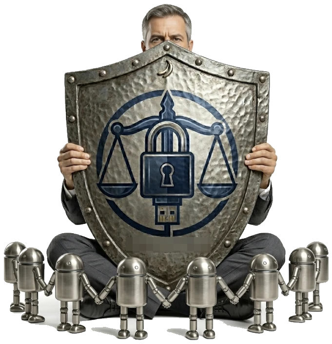
Le conduceți în limbaj natural, ca un partener care coordonează doi colaboratori: „Elaborează asta … acum dă-i-o celuilalt la verificat … adu-mi evaluarea lui … revizuiește." Schița, teoria sau actul se predau prin IRONSTICK, a doua IA le analizează critic — cu sarcina de a găsi slăbiciuni, contraargumente și erori, nu de a lăuda — iar evaluarea ei se întoarce la dumneavoastră. Ambele lucrează pe date de dosar identice, iar întregul schimb este consemnat și poate fi urmărit.
Verificarea cu mai multe modele este utilă în special pentru:
Erorile de înregistrare și scanările slabe nu mai trebuie să fie permanente. Când IA dă peste un text integral stocat care e trunchiat sau deteriorat de o rulare slabă a OCR, nu îl ocolește în tăcere — repară înregistrarea: cere o rescanare proaspătă, exactă pe pagini, a PDF-ului original (alegeți paginile în selectorul de pagini familiar), compară noua scanare cu textul stocat pasaj cu pasaj și are instrucțiunea să repare numai erorile mecanice de OCR, fără reformulări și fără a modifica numere, nume sau sume. Apoi predă înapoi textul integral corectat. Îl vedeți în întregime, iar textul corectat îl înlocuiește pe cel vechi numai după aprobarea dumneavoastră. Arhiva devine mai curată cu fiecare săptămână în care lucrați în ea.
Acolo unde chiar și o scanare proaspătă atinge limite fizice, IA vă întreabă țintit pe dumneavoastră: în locul unui generic „fișierul nu a putut fi procesat", deschide înregistrarea, numește locul exact („pagina 12, sus") și vă roagă să transcrieți cuvintele ilizibile, fiecare cu pagină și poziție — sau să îi predați PDF-ul original prin agrafă, ca să citească scanarea cu propria vedere. Nu răsfoiți niciodată un dosar de 200 de pagini; sunteți chemat doar pentru pasajele pe care mașina nu le poate rezolva cu certitudine. Sistemele convenționale raportează fie succes, fie o eroare generică; IRONSTICK combină în schimb viteza IA cu o verificare umană țintită.
Partea a III-a — Verificare și suveranitate
Singura teamă justificată privind IA în practica juridică: modelele inventează trimiteri, denaturează cifre și pretind că au citit dosare pe care doar le-au răsfoit. Industria răspunde cu prompturi și declinări de răspundere — IRONSTICK răspunde cu arhitectură. IA dumneavoastră de desktop lucrează asupra dosarului prin peste 200 de instrumente specializate, iar orice drum către un document care iese din sistem trece prin porți deterministe: logică pură, nicio IA care verifică o IA.
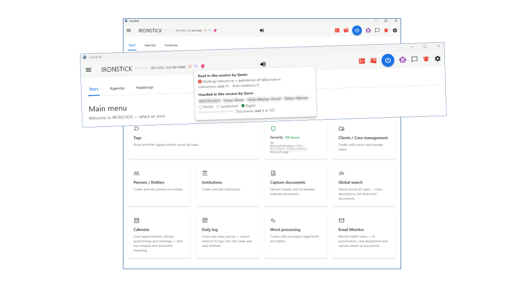
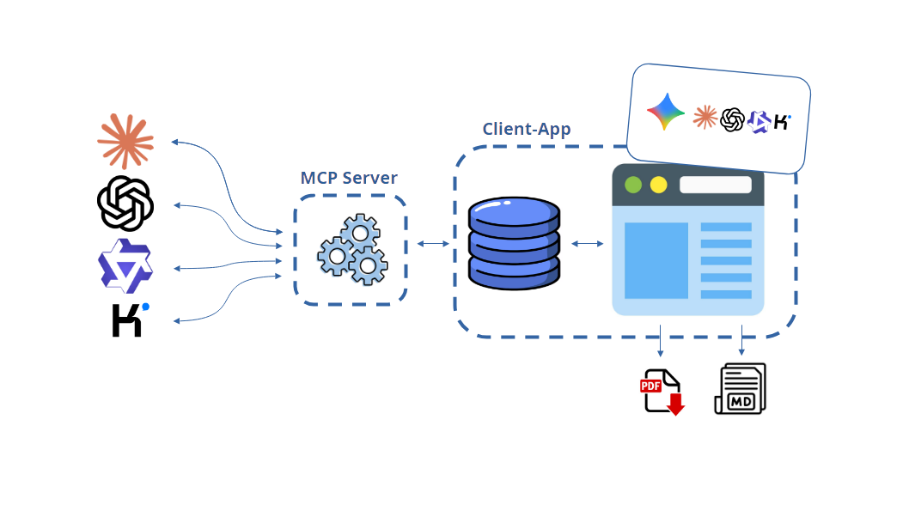
Din câte știm, nicio altă aplicație juridică nu impune această combinație. Instrumentele de observabilitate consemnează după fapt, sandbox-urile restricționează accesul — IRONSTICK verifică munca la singura interfață pe care o are IA.
Cum funcționează chatul IA intern și Bridge-urile pentru Claude, ChatGPT, Kimi și Qwen, și ce face posibilă Calea IRONSTICK: Compendiul Bridge.
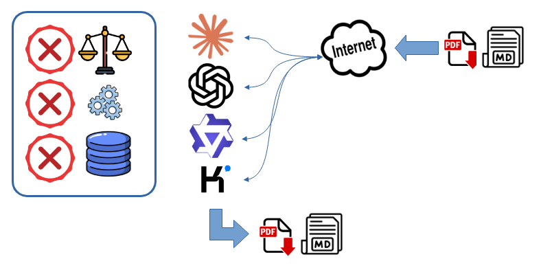
Majoritatea asistenților IA nu au încă nicio conexiune la baza de date cu dosarele și datele clienților dumneavoastră — singura cale de acces este încărcarea de fișiere. Multe sisteme bazate pe cloud funcționează la fel: cel mult mută fișiere text în fundal, invizibil pentru utilizator. IA se folosește atunci doar de informațiile din exact aceste fișiere încărcate. Dacă ele nu sunt prea mari, IA poate ține cont de tot; altfel, halucinațiile devin probabile. IA nu poate accesa dosarul în sine: lucrează fără să vadă dosarul și încearcă să obțină pentru utilizator cel mai bun rezultat. Aceasta poate duce la aprecieri greșite grave și la afirmații false.
Nici abilitățile (skills) și plug-in-urile suplimentare nu schimbă acest lucru. Pot chiar agrava problema: instrucțiunile lor ample ocupă o parte considerabilă a ferestrei de context înainte ca IA să fi citit primul document — și cu cât această fereastră este mai plină, cu atât mai inegal ține IA cont de ceea ce conține.
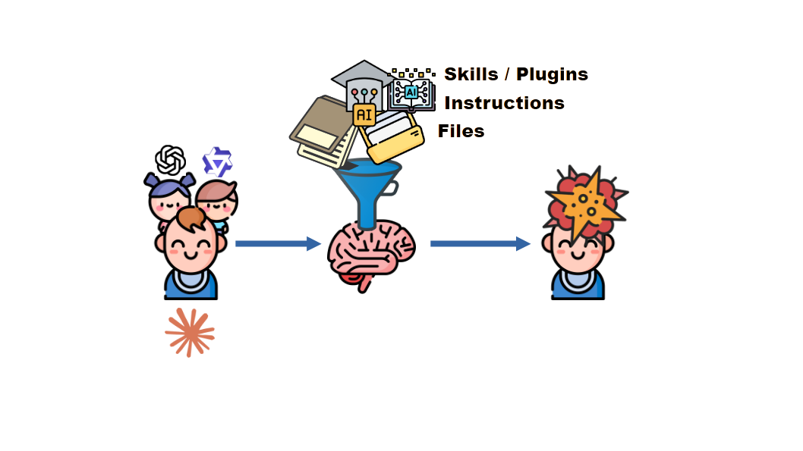
Un model de IA are o memorie de lucru limitată. Dacă este inundat deodată cu cantități mari de material, nu poate reține totul și poate pierde fapte sau instrucțiuni importante.
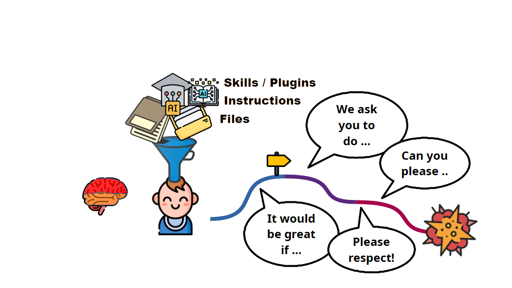
Asta se întâmplă astăzi cu ofertele de IA „best effort”, indiferent de felul în care sunt promovate. În practică, contextul IA este pur și simplu umplut cu datele dosarului dumneavoastră: dosare întregi, texte lungi și, pe deasupra, instrucțiuni lungi și eventual plug-in-uri și skill-uri. Contextul se umple până când nu mai încape nimic, apoi este comprimat sau citit doar parțial. Pe această bază, IA este apoi trimisă să vă redacteze actul procedural, iar riscul de eroare este ridicat.

IRONSTICK merge pe un alt drum. Instrucțiunile sunt limitate la 20.000 de caractere, o mică fracțiune din fereastra de context a modelelor acceptate. Datele dosarului dumneavoastră sunt mai întâi pregătite de IRONSTICK, iar IA primește doar datele care contează (date compacte, structurate, fără proză). Pe parcurs, IA nu este lăsată singură: primește instrumente și măsuri de siguranță și este condusă spre țintă prin indicatoare și porți de verificare.
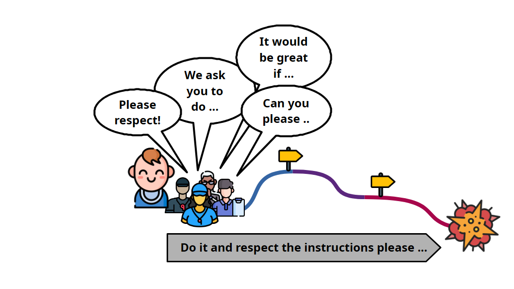
Ofertele clasice „best effort” îi dau IA mai întâi un set lung de instrucțiuni, apoi se bazează pe faptul că le va respecta și că nu va fi uitat nimic.

IRONSTICK ghidează IA continuu, cu puncte de control, informații suplimentare și instrumente pe parcurs, și verifică permanent atât drumul, cât și rezultatul modelului de IA.
Cu un software de cabinet în cloud, datele dumneavoastră și o parte din responsabilitate trec în infrastructura unui terț. IRONSTICK le păstrează pe ambele la cabinet: sistemul este conceput astfel încât stațiile de lucru să continue să funcționeze dacă IRONSTICK SERVER cade sau este compromis.
Soluțiile SaaS promit securitate; această arhitectură o integrează în structură. Soluțiile de cabinet din cloud și SaaS au o slăbiciune structurală comună: sunt centralizate. IRONSTICK este descentralizat prin construcție.
Dosarul rămâne al dumneavoastră. IA vine la datele dumneavoastră — nu datele dumneavoastră la IA. Aceasta este diferența fundamentală dintre IRONSTICK și platformele juridice de IA din cloud. O mare parte a industriei a trecut la un singur model: dosarele clienților dumneavoastră stau în cloud-ul unui furnizor, iar o IA închiriată de la același furnizor lucrează acolo pe ele. IRONSTICK întoarce acest model — dosarul rămâne pe hardware-ul dumneavoastră, iar propriile abonamente de IA se conectează la el printr-un Bridge controlat și documentat.
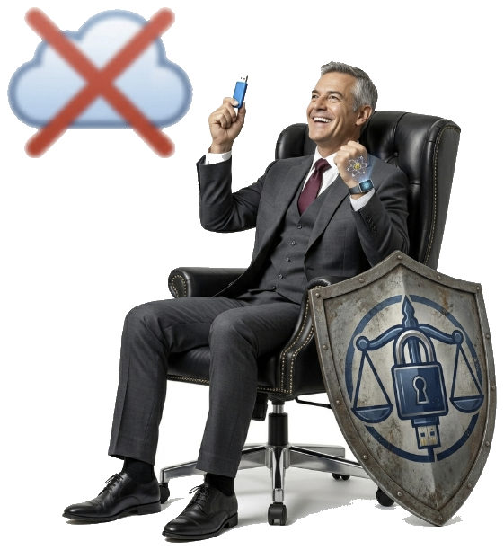
Patru argumente, în ordinea în care le-ar ierarhiza clienții dumneavoastră:
Tot mai mulți avocați experimentează deja cu un chat de IA general — lipesc documente în el și pun întrebări. Pentru un singur document scurt funcționează. Sub o încărcare reală de cabinet se lovește de două limite dure — și exact pe acestea IRONSTICK este construit să le elimine.
Diferența e simplă: a sta de vorbă cu o IA — sau muncă de dosar apărabilă, repetabilă, care rezistă și peste luni.
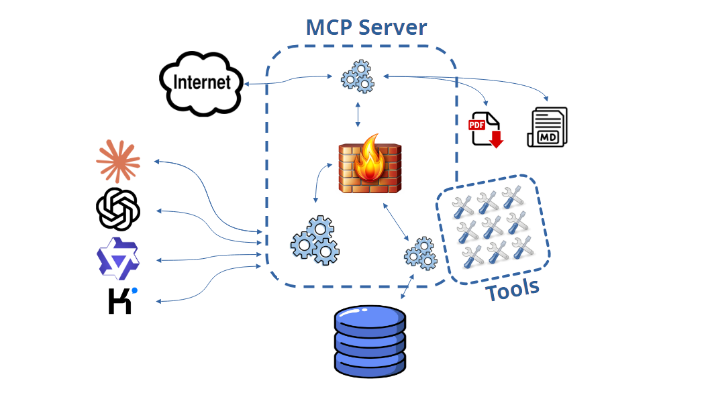
Și de ce, în fond, modele de IA externe — în loc de unul propriu? Motivul este unul economic. Operarea unui model de limbaj propriu, de calitate utilizabilă, ar necesita o investiție substanțială în servere, răcire și infrastructură, plus costuri anuale curente pentru funcționare, întreținere și personal de specialitate. Pentru un cabinet de avocatură, această investiție nu are sens. Iar dacă IRONSTICK ar oferi în schimb un serviciu propriu de IA în cloud, ar fi același tip de serviciu pe care Claude, ChatGPT, Qwen și Kimi îl oferă deja — doar că IRONSTICK nu l-ar putea oferi la prețurile lor. De aceea IRONSTICK conectează abonamentele dumneavoastră la modele de vârf, în loc să ofere un model propriu.
Partea a IV-a — Securitatea datelor: datele dumneavoastră, regulile dumneavoastră
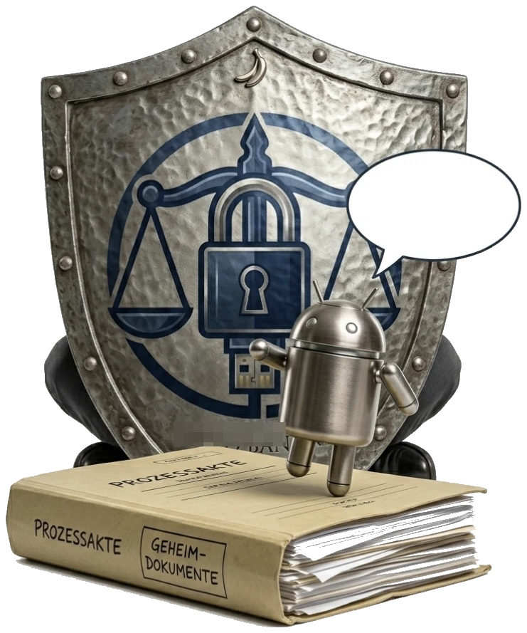
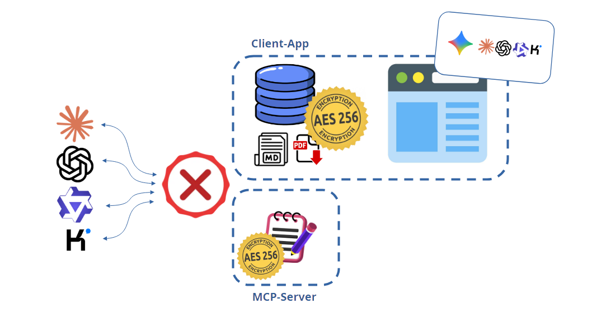
Toate straturile de protecție descrise aici sunt active din fabrică — fără configurare și fără o setare care să le poată dezactiva din greșeală: datele în repaus criptate AES-256 — baza de date, fiecare document, configurarea și întreaga zonă de lucru a IA. Accesul la rulare numai cu codul din aplicația de autentificare. Datele în mișcare: fiecare cale documentată în declarația GDPR livrată cu produsul.
Software-ul juridic în cloud vă vinde promisiunea că altcineva vă păstrează datele în siguranță. Aici protecția face parte din construcție, pe propriul hardware, și fiecare strat îl puteți verifica singur.
Partea a V-a — Crește odată cu cabinetul
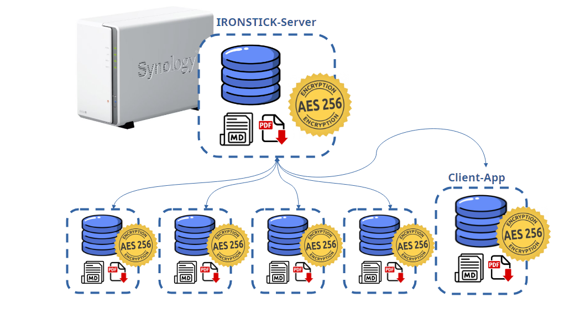
Pentru cabinetele cu mai mulți avocați, IRONSTICK oferă IRONSTICK SERVER — serverul de cabinet — un modul licențiat separat care transformă stații de lucru independente într-un cabinet multi-utilizator coordonat, fără cloud și fără a renunța la dosarul local. Rulează ca pachet nativ pe un NAS Synology — dispozitive de stocare compacte, cu întreținere redusă, larg folosite în cabinetele mici — pe orice model cu DSM 7.0 sau mai nou, în întregime în propria rețea și fără trafic de IA.
De ce un NAS Synology — și de ce nu este un proiect IT. Am ales Synology în mod deliberat pentru că aceste dispozitive sunt plug and play: conectați curentul și rețeaua și sunt gata de utilizare. Instalarea pachetului IRONSTICK SERVER durează câteva minute și nu cere consolă și nici fișiere de configurare; administrarea se face într-un browser. Stațiile de lucru sunt la fel de nepretențioase: instalatorul este o configurare complet ghidată, care nu cere cunoștințe IT și nici chestionare lungi — porniți-l și introduceți cheia de licență. Stațiile de lucru și serverul se găsesc automat în rețea; nimeni nu tastează o adresă. Un cabinet cu un singur birou nu are nevoie deloc de NAS — serverul este un modul opțional pentru cabinetele cu mai mulți avocați.
Eliberarea unui dosar este un act deliberat, niciodată un efect secundar. Proprietarul partajează dosarul din aplicație; acesta călătorește către server printr-un transfer în două faze — întâi metadatele, apoi conținutul fișierelor, astfel încât un transfer întrerupt nu lasă în urmă un dosar parțial — iar fișierele mari sunt adresate după conținut, deci documentele identice călătoresc și se stochează o singură dată. Serverul atribuie ID-uri interne proaspete la tot ce stochează: un dosar primit nu poate intra în coliziune cu datele deja aflate pe stația unui coleg. Colegii văd dosarul partajat pe propriul ecran de dosare de server și se abonează; abonatul primește o copie completă în propriul dosar local și lucrează pe ea cu sistemul complet — căutare, asistent, redactare cu IA, totul. Proprietarul poate revoca partajarea oricând, administratorul poate încheia central orice abonament, iar fiecare partajare, abonare și export se consemnează cu dată, oră și adresă. Documentele marcate secrete sunt excluse din dosarele partajate; un transfer al proprietății asupra dosarului le include numai după confirmarea explicită a proprietarului.
Avantajul-cheie: lucru în echipă simultan, asistat de IA, pe un singur dosar. Fiecare abonat își lucrează copia cu sistemul complet — inclusiv cu propria IA de desktop. Mai mulți avocați pot deci lucra pe același dosar în același timp, fiecare cu propria IA citind dosarul la adâncime maximă, și îi pot trimite proprietarului dosarului mesaje și evaluări finite direct din sesiunea de IA: un tabel al contradicțiilor de la un birou, o schiță revizuită de la următorul, o evaluare de risc de la al treilea, toate ajungând la proprietar în timp ce munca se desfășoară. Când un termen se ivește brusc sau o ședință este devansată, mai mulți colegi pot lucra în paralel pe un singur dosar — fluxuri de lucru împărțite, un singur proprietar care ține dosarul.
Fiecare birou IRONSTICK întreține texte de lege verificate ca Markdown în text integral, fiecare intrare etichetată cu jurisdicția, linkul-sursă și data de revizuire. Asistentul și Bridge-urile IA de desktop ajung la această bibliotecă prin trei instrumente proprii: o căutare fuzzy (jurisdicția este o mențiune obligatorie, deci sistemele juridice nu se amestecă), preluarea cuvânt cu cuvânt a textului stocat (IA citează formularea verificată, nu memoria sa de antrenament) și depunerea de surse noi (ori de câte ori IA întâlnește online o sursă juridică relevantă, îndosarierea ei este o obligație, nu o opțiune — doar linkul; aplicația descarcă, convertește și verifică singură textul, iar dumneavoastră îl eliberați prin poarta de verificare a Monitorului de consistență a datelor).
Asta face biblioteca dinamică: crește din munca zilnică a cabinetului. Fiecare sesiune de cercetare a fiecărui coleg — umană sau asistată de IA — o hrănește. Cu IRONSTICK SERVER, fiecare lege eliberată este deduplicată central (aceeași sursă actualizează intrarea; o versiune mai nouă a aceluiași text câștigă, cea depășită este arhivată, nu pierdută) și oglindită la fiecare birou. Datele de revizuire o țin onestă: intrările neverificate de peste o lună se colorează roșu la fiecare birou și în administrarea web, iar dacă un contribuitor lipsește, serverul îi realocă intrările uniform între utilizatorii activi, astfel încât obligația de revizuire continuă și în concedii. Rezultatul: toate IA cabinetului argumentează dintr-o singură bibliotecă legislativă verificată și întreținută — verificată o dată de un coleg, citată cuvânt cu cuvânt la fiecare birou, întreținută sub o obligație comună — în loc ca fiecare birou să aducă iar web-ul deschis și să se încreadă în ce a venit. Și este gândire de civil law de la un capăt la altul: autoritatea este textul de lege codificat, citat cuvânt cu cuvânt, așa cum se așteaptă instanțele din jurisdicțiile de civil law ca autoritatea să fie citată.
Disponibilă numai împreună cu IRONSTICK SERVER: aplicația Central Scan, un program de sine stătător pentru PC-ul de la secretariat — acolo nu e nevoie de nicio instalare IRONSTICK. Până la trei licențe Central Scan pot fi achiziționate per server — fiecare licențiată separat — deci pot rula până la trei stații de scanare per cabinet; toate pot lucra chiar același folder de intrare în paralel, fără coliziuni (un document deschis de o persoană este blocat automat și apare gri pentru celelalte).
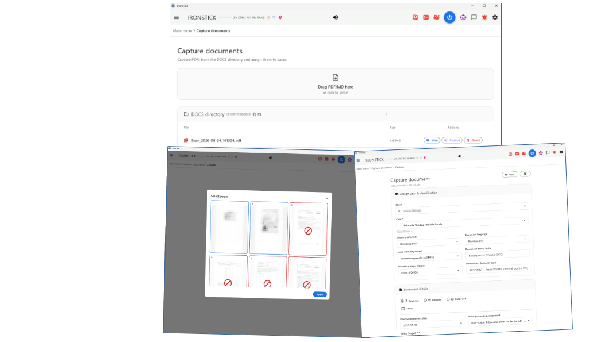
Local, IRONSTICK măsoară timpul de lucru automat, ca efect secundar al lucrului: fără cronometru, fără disciplină start/stop. Timpul se deduce din activitatea efectivă în aplicație, se atribuie dosarului în care lucrați, cu plafonare a timpului inactiv, ca o fereastră deschisă peste prânz să nu factureze pe nimeni. Fiecare birou are propria pagină de timp — azi, 7, 30, 90 de zile sau tot; per dosar, per client, zi cu zi, cu bare.
Cu serverul, fiecare stație de lucru raportează aceste măsurători în fundal — la fiecare cinci minute, ca totaluri compacte pe zi și dosar (inclusiv numele clientului), cu zilele lipsă completate automat; un birou care se alătură mai târziu își livrează istoricul complet, deci imaginea pe cabinet este întreagă din prima zi. Pagina de Timp a administrării web este o copie fidelă a paginii de timp de pe desktop, extinsă cu un selector: un singur utilizator sau TOȚI — întregul cabinet. Timp per dosar, per client și per zi, peste toate birourile — o bază consecventă pentru facturare, planificarea capacității și decizii de management, produsă fără ca cineva să completeze vreo fișă de pontaj.
Sistemul crește odată cu cabinetul. De la un cabinet individual la o echipă mai mare, IRONSTICK crește odată cu dumneavoastră. Un avocat individual începe cu o aplicație client și, dacă dorește, un Bridge (de exemplu Claude sau ChatGPT). Când i se alătură un al doilea avocat, se mai licențiază o aplicație client și un Bridge, plus IRONSTICK SERVER, care include până la cinci stații de lucru. De atunci înainte, fiecare coleg suplimentar înseamnă o aplicație client și un Bridge, iar de la a șasea stație de lucru, încă un loc de server. Fără investiții mari inițiale — licențiați numai ce vă trebuie chiar acum. Iar dacă echipa se micșorează, pur și simplu cumpărați mai puține licențe.
Partea a VI-a — Fiabilitate: autoreparare, backupuri și efort IT minim
Un server care coordonează un întreg cabinet trebuie să poată ceda fără să ia cabinetul cu el, iar acesta este conceput astfel. Întreaga stare a serverului trăiește într-un singur folder de date pe NAS: includeți-l în backupul NAS-ului (de ex. Synology Hyper Backup) și un aparat defect se restaurează în trei pași — instalați pachetul pe aparatul de schimb, puneți folderul la loc, porniți. Totul revine așa cum era, iar stațiile de lucru se reconectează singure. Și pentru că sistemul este descentralizat — fiecare stație de lucru își păstrează dosarul local complet, copiile abonate, oglinda bibliotecii legislative și propriile backupuri — chiar și după o pierdere totală a NAS-ului fără backup, stațiile de lucru repopulează noul server automat: stațiile de lucru se reînregistrează automat, proprietarii își reemit automat partajările de dosare (verificat de două ori pe zi), copiile abonate sunt protejate 14 zile în loc să fie aruncate, biblioteca legislativă este reconstruită din oglinzile proprii ale stațiilor, iar predările de dosare în curs sunt concepute astfel încât să nu se piardă date. Pentru cerințe mai înalte, același pachet rulează neschimbat pe modelele Synology mari, complet redundante — redundanță de discuri RAID, surse de alimentare redundante, perechi High-Availability cu failover automat. Mutarea cabinetului este la fel de simplă: luați stațiile de lucru cu dumneavoastră, instalați NAS-ul la noua adresă, conectați totul la LAN — Plug and Play. Stațiile de lucru își regăsesc singure serverul: fără adrese fixe, fără reconfigurare și fără programare la IT.
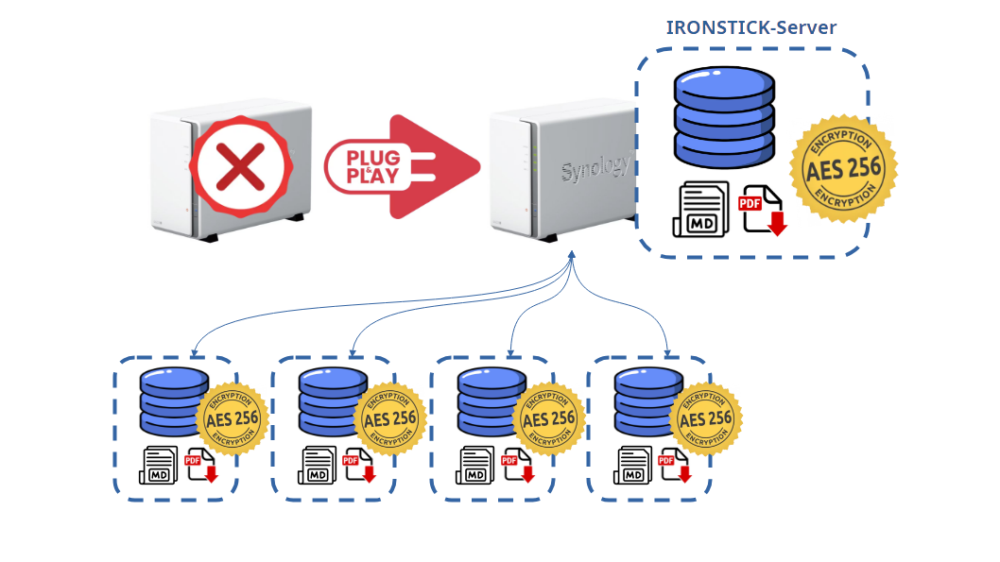
Întreținerea: sistemul este conceput să repare automat defecțiunile obișnuite și necesită foarte puțină întreținere. Rulează fiabil chiar și pe hardware mai vechi. Iar prin funcția de backup, în caz de urgență pur și simplu reinstalați și restaurați backupul.
Sistemul se repară singur. Timpul de recuperare depinde doar de cât de repede este instalat un aparat de schimb, pus software-ul la loc și conectat aparatul la LAN (serverul) — sau restaurat backupul (stația de lucru). Restul este automat. Și chiar în timp ce serverul este căzut, din orice motiv, stațiile de lucru continuă să lucreze local, pe propriile calculatoare: fiecare avocat are dosarul complet pe propria mașină.
O obiecție îndreptățită: IRONSTICK rulează pe propriul hardware, deci nu există un furnizor de cloud al cărui suport să intervină când cedează un disc local. Adevărat — și intenționat: nimeni de la distanță nu vă deține dosarele, și nimeni de la distanță nu le poate pierde, citi sau să vă blocheze accesul. Ce cere asta cu adevărat de la un cabinet fără administrator este mai puțin decât pare.
Cunoștințele IT necesare sunt cele ale oricărui loc de muncă Windows, nu mai mult. Ce vă ia IRONSTICK de pe umeri este dependența de centrul de date al altcuiva; ce cere în schimb este un stick de backup pe care chiar îl folosiți.
Partea a VII-a — În practică
| Minim | Recomandat | |
|---|---|---|
| Sistem de operare | Windows 11, 64-bit | Windows 11, 64-bit, actualizări la zi |
| Procesor | x64 modern cu 4 nuclee (de ex. Intel Core i5 / AMD Ryzen 5) | 6–8 nuclee — recunoașterea de text rulează pe mai multe pagini în paralel, iar recunoașterea vocală offline profită direct de fiecare nucleu |
| Memorie | 8 GB RAM | 16 GB RAM — spațiu confortabil pentru PDF-uri mari, construcții de dosare și transcriere audio în paralel |
| Stocare | SSD cu 20 GB liberi | SSD NVMe cu 100+ GB liberi — arhiva de dosare, căutarea în text integral și producerea de PDF-uri sunt intensive pe disc; un SSD rapid face o diferență vizibilă |
| Ecran | 1920 × 1080 | 1920 × 1200 sau mai mult — ecranele de dosar folosesc generos spațiul vertical |
| Grafică | Nu este necesară placă grafică dedicată — orice grafică integrată este suficientă | |
| Conectivitate | Internet numai pentru IA externă, actualizarea legilor, e-mail, cercetare web, hărți și geocodarea adreselor — dosarul, căutarea, documentele și asistentul local rulează complet offline; un port USB liber pentru sincronizarea cu tableta | |
Opțional: o tabletă Android (Android 11 sau mai nou, 64-bit, ecran de mărimea unei tablete) pe același dosar, prin sincronizare pe cablu, și propriul cont de IA (pentru IA externă din aplicație și/sau o IA de desktop — Claude Desktop, ChatGPT Desktop, Qwen Desktop sau Kimi Desktop) — fără el, IRONSTICK rulează pur și simplu ca sistem complet local.
Cine ține dosarul pe o unitate externă — de exemplu pentru a lucra cu PC-ul de birou și laptopul pe același set de date — are nevoie de o unitate care să reziste sarcinii continue a unui cabinet. IRONSTICK verifică fiecare țintă înainte de mutare și refuză unitățile nepotrivite (Windows).
| Verificare | Cerință |
|---|---|
| Spațiu liber | Cel puțin 9 GB, respectiv cu 1 GB mai mult decât setul de date actual |
| Scriere / citire | Cel puțin 80 MB/s / 150 MB/s — și sub sarcină continuă (nu sub 60 % din valoarea inițială) |
| Multe fișiere mici | Cel puțin 250 de fișiere pe secundă |
| Sistem de fișiere | NTFS sau exFAT, nu FAT32; neprotejat la scriere și neblocat |
| Fiabilitate | Datele de test trebuie recitite neschimbate |
| Nepermis | Unități de rețea și foldere sincronizate cu cloudul (OneDrive, Google Drive, Dropbox, iCloud, Box, pCloud, MEGA) |
| Recomandare | SSD extern — stick-urile USB obișnuite ating rareori aceste valori |
| Cerință | |
|---|---|
| Aparat | Orice NAS Synology cu DSM 7.0 sau mai nou — ARM sau Intel; pachetul livrează binare native pentru ARMv7, ARM64 și x86-64 |
| Performanță | Conceput să fie ușor: verificat pe un model de bază DS214se din 2014, cu CPU ARM single-core și 256 MB RAM; rulează pe orice model Synology cu DSM 7.0 sau mai nou, iar modelele curente oferă rezerve considerabil mai mari |
| Memorie / CPU | Fără cerințe dedicate dincolo de NAS-ul însuși — serverul nu face muncă de analiză; sarcinile lui de fundal se limitează la retransmiterea pachetelor și o curățare nocturnă |
| Stocare | Câteva sute de MB pentru pachet și biblioteca legislativă; pachetele de dosare partajate cresc numai cu ce partajați efectiv |
| Rețea | Numai LAN-ul cabinetului; un port TCP (47712), cu autentificare prin token. DSM, Web Station și porturile 80/443 rămân neatinse |
| Administrare | Orice browser din LAN; parolă de administrare proprie; cheia de licență introdusă o singură dată |
IRONSTICK nu a fost construit ca să impresioneze într-un demo. A fost construit ca la 19:00 să închideți laptopul — cu dosarul citit, schița călită, termenul respectat, și dovada tuturor celor trei în sistem.
IRONSTICK se licențiază pe componente. Luați doar părțile de care aveți nevoie și adăugați pe măsură ce cabinetul crește. Aici sunt prezentate componentele și modul în care se licențiază fiecare — sumele le găsiți pe pagina de prețuri.
| Componentă | Licențiată per |
|---|---|
| IRONSTICK aplicația client (aplicația de bază) | per utilizator / stație |
| Bridge individual — Claude, ChatGPT, Qwen sau Kimi | per utilizator / stație |
| Pachetul de Bridge-uri — toate cele patru Bridge-uri împreună | per utilizator / stație |
| IRONSTICK SERVER (incl. până la 5 conexiuni aplicația client) | per cabinet / server |
| Conexiune suplimentară a aplicației client pe server (de la a 6-a) | per conexiune suplimentară |
| Central Scan App (max. 3 per server) | per utilizator / stație de scanare |
Descărcați software-ul: aplicația client, Bridge-urile, IRONSTICK SERVER și Central Scan App sunt disponibile pe pagina de descărcare — unde găsiți și ordinea de instalare, regulile de licențiere și formularul pentru solicitarea cheilor de licență.